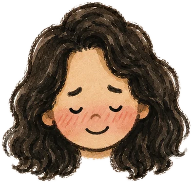
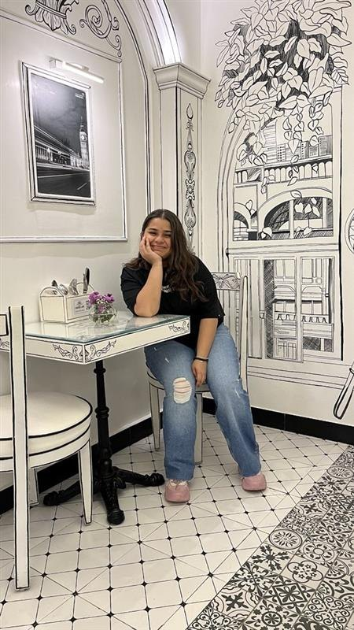

Making by hand
I make things for the people I love. Craft projects, small handmade objects, the kind of gift that takes four evenings and is worth every one of them.
About

I design digital products, and I care about who is on the other side of the screen.

I have been making things for as long as I can remember, and somewhere between filling sketchbooks as a child and building design systems for a living, that has not changed.
Five years in, I have moved from visual design into UI and now into product design, largely by staying curious about the next part of the problem. I design for web and mobile, across consumer products and enterprise tools.
I like clean, minimal interfaces where nothing sits on the screen unless it has earned its place. I like understanding who is on the other side and what they came to do. And when a brand calls for something more playful, I enjoy that just as much. The tone should suit the product, not me.
Design systems are where I am most at home. Components, variants, states and the logic underneath, the structure that keeps a product consistent long after I have handed it over.
The part I enjoy most is people. Talking to them, building alongside them, and working through the disagreements that usually make the work better.
Good systems are invisible. That is the point.
Trust me, I can make things happen.
The short version
Also true
The work that happens before the visual design begins. Research, strategy, user flows, information architecture. The more I understand about the problem, the better the interface gets, so that is where I am pushing myself next.
What I work with
Off the clock
I do not stop making things when I close the laptop. Craft, photography, packaging, all of it comes from the same place as the design work. I like building something carefully and handing it to someone. The materials change. The instinct does not.
I make things for the people I love. Craft projects, small handmade objects, the kind of gift that takes four evenings and is worth every one of them.
I have strong opinions about packaging. Every gift I give is hand wrapped, and I will happily spend longer on the wrapping than on choosing what goes inside.
I take a lot of pictures and turn them into short films and reels. It has quietly taught me more about framing and pacing than any tutorial.
Competitive enough to be fun, and the fastest way I know to stop thinking about work.
Long walks, hills, and any excuse to be somewhere with a view. I come back with sore legs and several hundred photographs.
Different materials, same instinct.